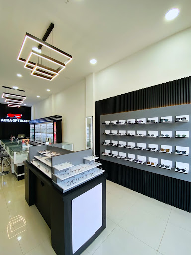
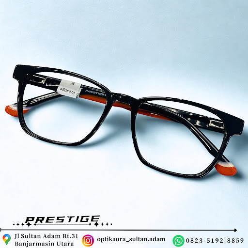
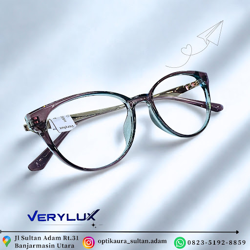
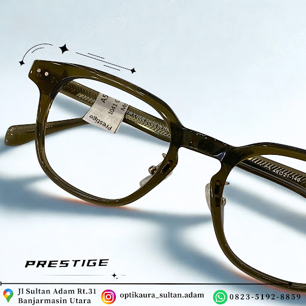
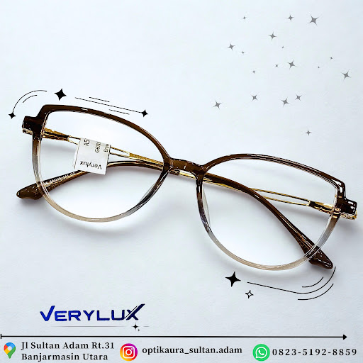
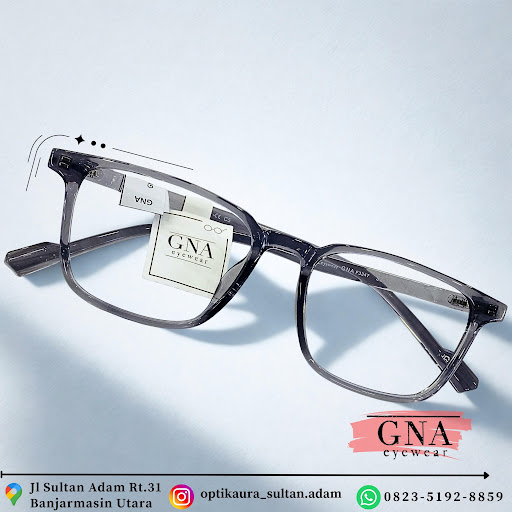
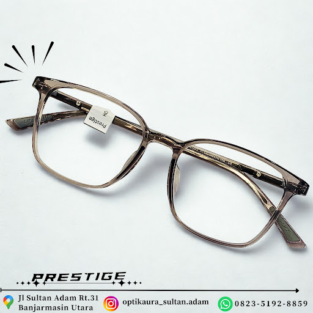
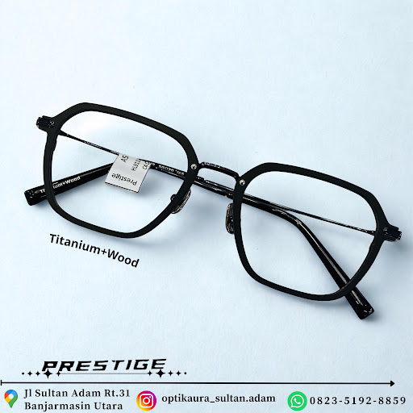

Lebih Jelas Melihat.
Lebih Percaya Diri Melangkah.
Temukan pilihan kacamata, frame, lensa, dan softlens untuk kebutuhan penglihatan serta gaya Anda di toko kami di kawasan Sultan Adam.

Jl. Sultan Adam RT.31
Sultan Adam, Banjarmasin • Buka Setiap Hari
Aura Optikal Banjarmasin
Pilihan Kacamata, Lensa & Softlens
Kenali Aura Optikal
Temukan kebutuhan kacamata dan softlens Anda bersama Aura Optikal. Kami hadir untuk membantu pelanggan menemukan pilihan produk dan layanan yang sesuai dengan kebutuhan penglihatan, kenyamanan kerja, serta karakter gaya personal Anda.
Pelayanan Ramah dan Personal
Konsultasi santai dan mendalam untuk memastikan frame dan lensa benar-benar pas di wajah.
Pilihan Produk Berkualitas
Pilihan frame dengan beragam material, mulai dari acetate hingga titanium.
Lokasi Strategis di Banjarmasin
Lokasi mudah dijangkau di Jalan Sultan Adam, dengan area parkir yang nyaman.
Komitmen Layanan Purna Jual
Dukungan perawatan gratis, penggantian nosepad, dan penyetelan kacamata berkelanjutan.
Temukan Pilihan yang Sesuai untuk Anda
Eksplorasi pilihan frame, lensa optik, dan kontak lensa yang dirancang untuk kenyamanan penglihatan harian Anda.
Koleksi Frame & Kacamata
Desain ergonomis, bahan ringan, dan presisi bentuk untuk berbagai bentuk wajah.

Prestige Eyewear
Black Square • Orange Accent
Gaya tegas profesional dengan sentuhan aksen oranye pada ujung tangkai.

Verylux Eyewear
Cat-Eye Gradient Blue
Siluet cat-eye anggun bergradasi biru transparan, mengangkat proporsi wajah.

Prestige Series
Olive Green Acetate
Nuansa hijau zaitun transparan yang tenang, cocok untuk warna kulit tropis.

Verylux Series
Two-Tone Amber Warmth
Perpaduan cokelat amber hangat dengan garis bingkai bersih dan proporsional.

GNA Eyewear
Smoky Grey Square
Abu-abu transparan modern dengan garis sudut minimalis khas gaya perkotaan.

Prestige Series
Champagne Translucent
Kilau champagne lembut yang memberi kesan wajah cerah, bersih, dan segar.

Prestige Artisan
Titanium + Natural Wood Grain
Kombinasi material titanium super kokoh beraksen kayu alami di tangkai.
Pilihan Lensa untuk Kebutuhan Sehari-hari
Pilihan lensa untuk menunjang kebutuhan penglihatan dan kenyamanan aktivitas sehari-hari, mulai dari proteksi layar digital hingga adaptasi sinar matahari.
Lensa Anti Radiasi / Blueray
Lensa dengan filter cahaya biru untuk membantu mengurangi sebagian paparan cahaya biru dari perangkat digital. Pilihan lensa dapat disesuaikan dengan kebutuhan dan kenyamanan Anda.
Lensa Photochromic / Transition
Lensa adaptif yang otomatis berubah menjadi gelap saat terpapar sinar matahari dan kembali bening saat berada di dalam ruangan.
Single Vision & Progresif
Koreksi tajam untuk miopia (minus), hipermetropia (plus), astigmatisme (silindris), serta lensa progresif multifokal tanpa batas garis.
Bingung memilih jenis lensa yang tepat untuk pekerjaan Anda?
Temukan Pilihan Softlens Anda
Temukan pilihan softlens melalui katalog digital Aura Optikal. Tersedia varian warna natural, diameter nyaman, serta opsi minus untuk menunjang aktivitas tanpa kacamata.
*Tautan ini mengarahkan Anda langsung ke katalog digital resmi Aura Optikal untuk melihat update warna dan kadar air.
Kenali Kebutuhan Penglihatan Anda
Pemeriksaan ketajaman mata yang teliti menggunakan peralatan terstandar dan didampingi staf terlatih untuk kenyamanan maksimal mata Anda.
Pemeriksaan Refraksi & Ketajaman Penglihatan
Pemeriksaan refraksi untuk membantu menentukan ukuran lensa yang sesuai dengan kebutuhan penglihatan Anda, termasuk minus, plus, dan silinder.
Pengecekan Kacamata Lama & Pengukuran Presisi
Pengukuran jarak pupil (PD) dan penentuan titik pusat optik lensa untuk membantu memastikan posisi lensa sesuai dengan kebutuhan penglihatan Anda.
Konsultasi Pemilihan Lensa & Penyetelan Frame
Panduan kecocokan frame dengan kontur hidung dan telinga, serta rekomendasi indeks ketebalan lensa agar kacamata tetap ringan dan proporsional.
Area Pemeriksaan yang Nyaman
Konsultasikan keluhan buram, silau, atau pusing kacamata lama Anda langsung di toko.
Pelayanan Tidak Berhenti Setelah Pembelian
Kami tetap memberikan perhatian melalui layanan purna jual untuk membantu pelanggan merawat dan menggunakan kacamata dengan baik dalam jangka panjang.
Garansi Service Gratis
Penyetelan baut yang longgar, penggantian nosepad standar, dan perbaikan ringan kacamata Anda tanpa biaya tambahan (*syarat & ketentuan berlaku).
Perawatan Rutin Gratis
Pembersihan kacamata dengan teknologi ultrasonik dan pengecekan kerapatan frame secara rutin setiap kali Anda berkunjung ke toko kami.
Pelatihan & Edukasi
Panduan cara merawat kacamata, teknik menyimpan di casing yang aman, serta tips kebersihan lensa agar lapisan anti gores tetap awet bertahun-tahun.
Lebih Dekat dengan Aura Optikal
Lihat Lebih Dekat Suasana Toko dan detail kerajinan frame kacamata di toko kami.
Display Showcase Modern
Penataan kacamata yang rapi dan pencahayaan terang untuk kemudahan memilih.
Titanium + Kayu Alami
Kombinasi material premium tahan karat.
Cat-Eye Gradient
GNA Smoky Square
Prestige Olive Acetate
Promo dan Informasi Aura Optikal
Pembaruan penawaran, tips perawatan kesehatan mata harian, serta jadwal periksa untuk kenyamanan penglihatan Anda.
Promo Spesial di Aura Optikal
Dapatkan penawaran menarik untuk paket bundling frame + lensa pilihan langsung di toko Aura Optikal Jl. Sultan Adam.
Tips Merawat Kacamata
Hindari mengelap kacamata dengan baju kering karena serat kain kasar dapat menggores coating. Gunakan cairan khusus pembersih lensa dan kain microfiber bersih.
Pengingat Cek Mata Berkala
Disarankan untuk memeriksa kembali kenyamanan penglihatan setiap 6 hingga 12 bulan sekali untuk mengantisipasi perubahan ukuran minus atau silinder.
Kunjungi Aura Optikal
Kami siap menyambut Anda dengan ramah di Toko kami di kawasan Sultan Adam, Banjarmasin Utara.
Alamat Toko
Jl. Sultan Adam RT.31, Banjarmasin Utara, Kota Banjarmasin, Kalimantan Selatan
Kawasan mudah diakses, dekat dengan area pertokoan dan kuliner Sultan Adam.
Jam Operasional
GOOGLE MAPS
Rating & Ulasan Pelanggan
Lihat penilaian terbaru langsung di Google
Toko Aura Optikal
Banjarmasin Utara